TECHNICAL SERVICE RESPONSE NO.: UT034
Subject: Analysis of TreeBranches which Purportedly Came into Contact with a UFO (Centerville, Ohio,March 6, 2004)
Date: July 11, 2004
Requested By: Bruce M. Forrester,Zephyr Technology
Reported By: P. A. Budinger,Analytical Scientist
Background/Objective: An unusual event happened in Centerville, Ohio at approximately 5:30 a.m.Saturday morning March 6, 2004. Residents saw a UFO apparently interactingwith power lines. The extent of the interaction was explosive innature, and also involved the burning of tree tops. Flame and 'glitter'from the trees were purported to continue for several hours after the event. A detailed account of the UFO's movements and witnessís descriptionscan be found on https://home.fuse.net/ufoThe object of this analysis is to analyze the exposed tree branches forany unusual or foreign materials. Following are photographs of thebranches.
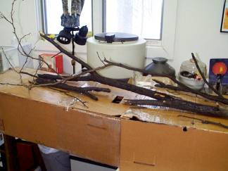
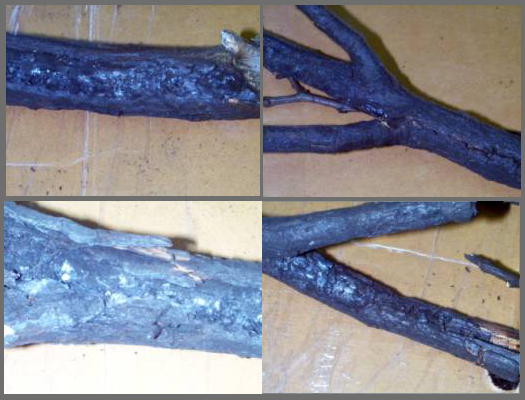
Conclusions:
1.) No unusual or foreign materials weredetected on the charred and unburned areas of the branches. The resultsshow normal natural products from trees and normal burn byproducts. The natural products include primarily celluloidal material, some naturalester, a small amount of secondary amide, and trace amounts of possiblenatural carboxylic acid salts. Burning byproducts include carbon,calcium carbonate, calcium phosphate, inorganic nitrate, and organic oxidationproducts, which are primarily carboxylic acid salts.
2.) It is worth noting that there are noradioactive or fluorescing materials. It is reassuring to knowradioactivity is absent.
3.) The results do not confirm or ruleout a UFO as a cause of the burning phenomenon. An interaction withsuch unknown craft could have resulted in normal burning byproducts, andmay not have left any unusual residues or craft deposits.
Procedure:
Samples: Several charred tree branchesfrom the event were sent.
Numerous infrared spectra were obtainedfrom both burn and unburned areas of the tree branches "as received". These were obtained on the Nicolet Avatar 360 spectrometer using the HarrickSplitPea (tm) sampling accessory. Some of the selected samplingareas of a branch are shown in the photograph below.
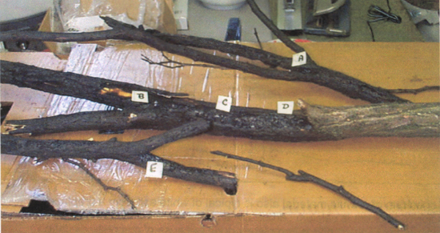
In addition, infrared spectra were alsoobtained from solvent extractions from the charred and unburned sectionsof the branches, as well as a control branch. Progressively polarsolvents were used, i.e. hexane, 1:1 acetone:methanol and water. The extracts were weighed for a quantitative estimate of their amounts.
The branches were also examined with aradiation monitor (SE International's Radiation Alert (tm) Monitor 4) anda UV light (Optical Engineering's Model 22-UV).
Results:
The results of the individual tests doneon the branches follow. These results are summarized in the conclusionssection of this report.
Analysis of theBranches "As Received"
Infrared analysis of the charred areasof the branches shows products typical of burned wood. Carbon, calciumcarbonate, sometimes organic oxidation products and inorganic nitrate arenoted. The amounts of these materials vary and depend on the degreeof burning the sample area of the branch experienced. The spectrafollow.
Infrared Spectra of Various CharredRegions of a Branch
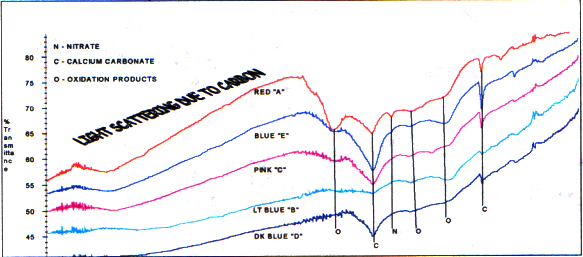
A spectrum of a white material also istypical of white ash from a fireplace. The major component is calciumcarbonate, and there is a smaller amount of calcium phosphate. (Thecarbon is completely gone because of complete oxidation.) Followingis a spectrum of the branch white material and a reference of white ashfrom the Budinger fireplace for comparison.
Infrared Spectrum of White Ash on theBranch
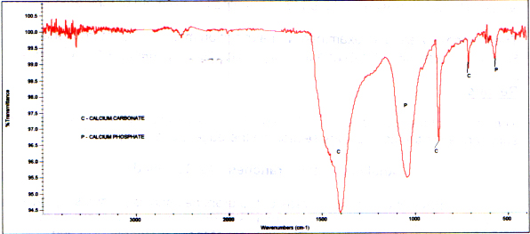
Infrared Reference Spectrum of WhiteAsh from Budinger Fireplace
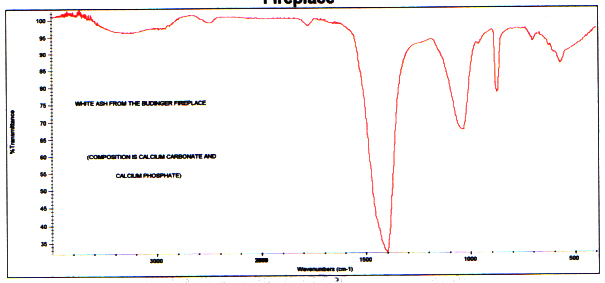
Infrared spectra from unburned areas ofthe branch show typical celluloidal material and natural ester. Forthe most part the spectra of the unburned area compare qualitativelyto reference control spectra of aged and new wood. (It should be notedthe aged wood additionally contains some mineral silicate (dirt).) However, due to the differences in wood sources and ages of the controlsbefore data acquisition, the quantitative amounts of the components vary. Following are two spectra from unburned branch areas and reference spectraof an aged piece of wood and live wood for comparison.
Infrared spectra of Unburned Areas ofthe Branches
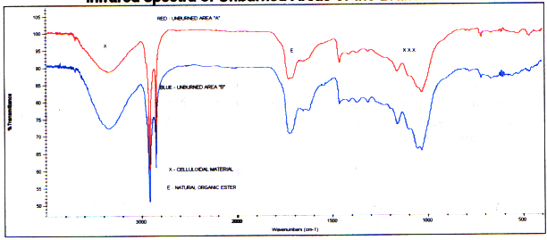
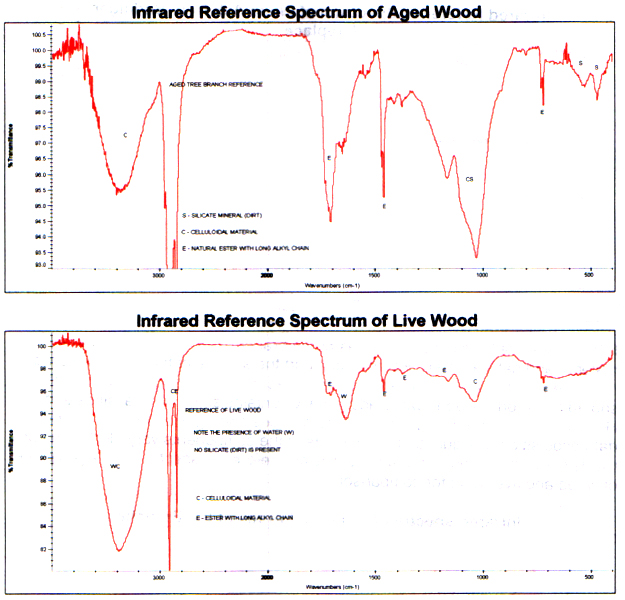
The "as received" charred and unburnedareas of the branches were examined with a UV lamp for any unusual fluorescingmaterial. None was detected. These areas were also scannedwith a radiation monitor. There was nothing detected above backgroundradiation.
Analysis of SolventExtracts from the Samples
The amounts of solvent extractable materialsusing progressively polar solvents (hexane, 1:1 acetone:methanol, water)from the charred and unburned areas of the branch as well as a controlfollow.
Amounts of Solvent Extracts
| Sample | Hexane (Wt.%) | 1:1 Acetone:Methanol (Wt%) | Water (Wt.%) |
| Charred Unburned Control Wood | 0.30 0.26 0.31 | 1.70 1.09 2.80 | 2.31 * 1.51 1.64 |
Expectedly, more material is extractedfrom the charred area than the unburned area because of the increase insoluble burn byproducts (oxidized organics). (See infrared analysisbelow.) Comparison of the control extract amount to the charred andunburned amounts vary and may be accounted for by the differences in woodtypes and wood age when the extraction was done. That is, extractionsof the branches were done 20 days after the event, and the control wasdone the same day it was cut. However, as the infrared analysis showsbelow, the control compositionally compares closely to the unburned wood.
Hexane Extracts:
Infrared analysis shows the hexane extractsfrom the unburned area compare to that of the control. That is, thesame components are present. These consist of celluloidal materialand natural ester. However, the quantitative amounts vary.There is less soluble celluloidal material in the unburned branch area. Following are the spectra of these two extracts.
Infrared Spectra of the Hexane Extract- Branch Unburned Area and Branch Control
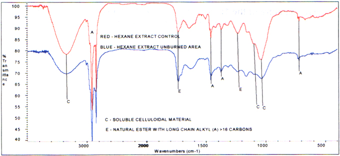
The hexane extract from the charred areais expectedly different. This is because of a chemical change asa result of the burning action. The infrared spectrum shows longchain natural ester and a trace amount of poly(dimethylsiloxane) contamination. This is a common contaminant and is probably from the aluminum pans usedin the experiment. There is no longer any celluloidal material. The spectrum follows.
1:1 Acetone:Methanol Extracts:
Infrared spectra of the acetone:methanolextract from the unburned area compare well to that of a control. The same components are detected with very subtle quantitative variations. The spectra show mostly soluble celluloidal material and smaller amountsof natural ester and possibly carboxylic acid salts. The spectra follow.
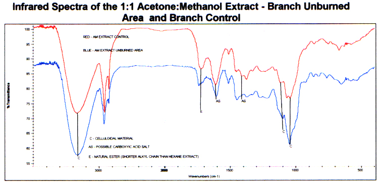
The spectrum of the acetone:methanol extract from the charred area is different and displays highly oxidized carboxylicacid salts. These are byproducts of the burning (oxidation). The spectrum follows.
Infrared Spectrum of the 1:1 Acetone:MethanolExtract - Branch Charred Area
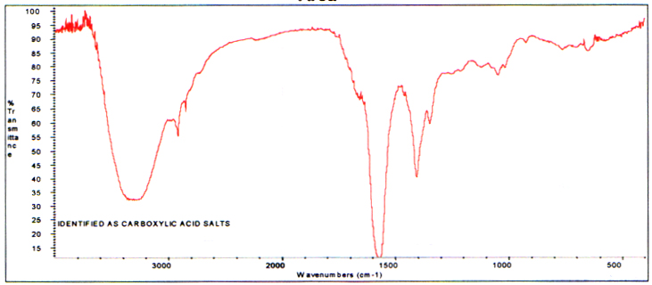
Water Extracts:
Infrared analysis of the water extractsfrom the unburned area and the control show they contain similar components. The amounts appear to vary. Identified are celluloidal material,carboxylic acid salts, and secondary amide. A trace amount of poly(dimethylsiloxane)contamination is found uniquely in the unburned extract.
Infrared Spectra of the Water Extract- Branch Unburned Area and Branch Control
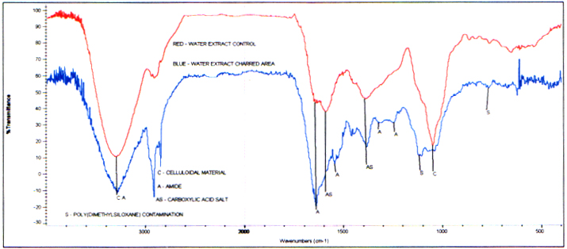
Infrared analysis of the extract from thecharred area shows primarily carboxylic acid salts which are definitelya product of the burning. The spectrum follows.
Infrared Spectrum of the Water Extract- Branch Charred Area
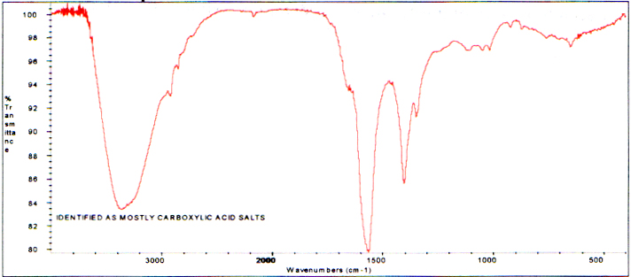
_______________
Phyllis A. Budinger
Distribution:
Kenny Young
Bill Jones
Donnie Blessing
Nancy Talbott
T. S. R. No.: UT034
Frontier Analysis, Ltd.